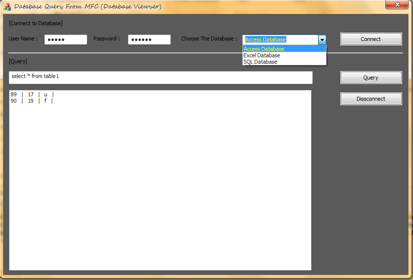
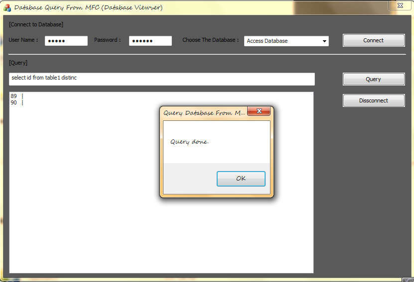

Query Database From MFC-Demo-98KB.zip
Query Database From MFC-Source.zip

Introduction
Todays in many projects, we need a database for our application. Cause of it we have to link to the database file from our application.
With this article we describe how can we connect to Database from MFC and do query or get report from that.
Background
To get the information of this subject you can read or search about Connect to databse from appplication.
Algorithm and Simulating of Algorithm in Code
At first, we have to determine that what database is wanted. With the choice of combobox we decide what string connection to database is need.
If we choose the Access Databae our string connection is like below :
Driver={Microsoft Access Driver (*.mdb)};Server:.;Dbq=db.mdb;Uid=;Pwd=;
and if we choose the <b>Excel Database</b> that's like :
Driver={Microsoft Excel Driver (*.xls)};DriverId=790;bq=C:\\DatabasePath\\DBSpreadSheet.xls;DefaultDir=c:\\databasepath;
and if choose the <b>SQL Database</b> that's will be :
Driver={SQL Server Native Client 11.0};Server=.;AttachDbFilename=shop.mdf;Database=shop;Trusted_Connection=Yes;
After that we run a query on the database. We have to care that the querie's type is
Reporting Query or Execute Query.
The queries that get information from database, these are
Reporting Query like "select * from table". And another queries that do a work or effect on the
databse, these are Execute Query like "update id form table1 where name='mahdi'".
To determine this algorithm we write a funtion to get the query string and determine that with below code :
bool IsReport(CString code){
code.TrimLeft();code.TrimRight();code.MakeLower();
if(code.Left(6)==_T("insert")||code.Left(6)==_T("update"))return 0;
return 1;
}
Now we decide that get report form database or send execute query with above funtion. If "IsReport()" funtion returns 0 it means that we have to send the query as a getting report and else we have to send the query as an execute
query.
The statements like "insert" , "update" ,.... effect on the database, so these are execute queries and we send these queries in
CDatabse and another statements are getting report and we send these with
CRecordset Classes.
The CDatabase class can do execute and
CReordset can fields of queries. With this code you can get betther :
CString query;
tquery.GetWindowText(query);
list.ResetContent();
if(IsReport(query)){//this is a report command
CRecordset recordset(&database);
CString temp,record;
recordset.Open(CRecordset::forwardOnly,query,CRecordset::readOnly);
while(!recordset.IsEOF()){//is null
record=_T("");
register int len=recordset.GetODBCFieldCount();
for(register int i=0; i < len ; i++){
recordset.GetFieldValue(i,temp);
record+=temp+_T(" | ");
}
list.AddString(record);
recordset.MoveNext();
}
}else{
database.ExecuteSQL(query);
}
MessageBox(_T("Query done."),0,0);

I Hope it will be usefull for you. thanks in advance.